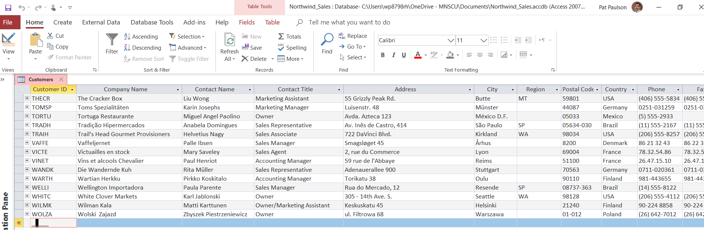
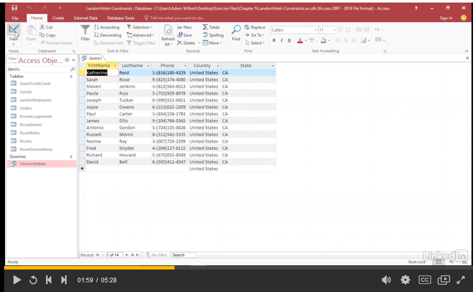
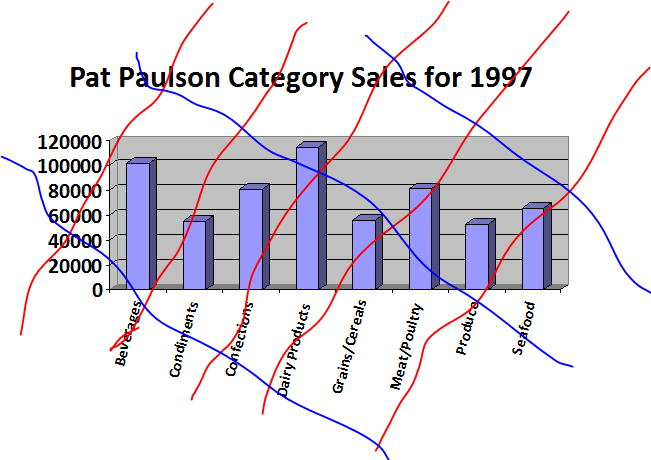

After completing this assignment you will be able to use a database application to
The exercises in this assignment should be done in the order presented.
If you enjoy working with databases, look into MIS 342-Advanced Business Computer Applications,which goes into more detail on how databases can be used by businesses to make decisions.
Note-PgP 10/11/2022-added 'PtrSafe' declaration to 32-bit functions in Access Northwind databases to prevent errors on 64-bit operating systems
The purpose of this assignment is to learn why businesses and other entities use database software. Yes you can use a spreadsheet to make a list of customers and what they have ordered, but there are limits to that approach. When a customer has placed multiple orders, and you want to contact that customer, which record contains the correct contact information in the case where there are differing addresses or phone numbers? Some other thing to consider are:
This assignment covers different ways to use a database application to work with data. You are encouraged to explore on your own to find additional features that will make your life and present or future jobs easier.
Ctrl + V
Open and examine this file: FlatFile_Sales.xlsx
Answer these questions:
1. (50) Who is the contact person at the Company "Toms Spezialitäten" ?
Open the file Northwind_Sales.accdb. Go to the tab "Database Tools" and select "Relationships". Explore the diagram that you see, which will look like the one below, and examine this file:
Open and examine the four tables- Products, Order Details, Orders and Customers.
Closely examine the "Customers" table. Look up the record for the Company "Toms Spezialitäten". 
2. (50) Explain briefly why the problem of who is the contact person for a specific company could not occur in a relational database:
For this assignment you must complete this Chapter 5 video 'Establishing constraints with criteria' which is 4m 37s. The database file 'LandonHotel-Critera.accdb' can be downloaded from LinkedIn Learning, and found in the OneDrive ReadOnly folder for this assignment.
As you work through this question, when they deomonstrate how to show Customers in the United States, and how to select various states such as California, make and save a query that shows customers from 'Texas' 
Then answer the following question:
3. (50) How many customers are located in Texas?
You are strongly encouraged to work through Learn Access for Office 365, it is well worth the time. There are other very useful videos on databases and SQL available from LinkedIn Learning
Open Northwind using Access and answer the following questions.
(50) 4. List the fields in the Order Details table
In Access create a new table that has the following settings. Table Name: tblInvoices
Required Fields (set all fields Data Type to 'Text'): InvoiceID CustomerID Status InvoiceDate SalespersonName ShipDate ShipVia ShippingCost Add two records to the table, with data of your choosing.
(50) 5. Use the Snipping Tool to make a screenshot of the table in datasheet view. Save the screenshot to OneNote and as "Ex3" in your ' ' folder.
Create a query that answers the following question. What are the company names, in ascending alphabetical order, that have placed orders?
(50) 6. Use the Snipping Tool to make a screenshot sowing the first 10 company names. Save the screenshot to OneNote and as "Ex4" in your ' ' folder.
Create a crosstab query based on the 'Sales by Category' query Feel free to use the crosstab query wizard. Use the following settings: Row Heading: Category Name Column Heading: ProductName Column and Row Intersection: Sum(ProductSales)
Answer this question: (50) 7. What is the Total of ProductSales for the Category 'Dairy Products'?
FORMS-ONSCREEN AND INTERACTIVE
Create a data entry form for the suppliers. The layout is to be columnar. Apply whatever Autoformat you want. Display the Suppliers form to Form View.
(50) 8. Use the Snipping Tool to make a screenshot of any record. Save the screenshot to OneNote and as "Ex5" in your ' ' folder.
Create a new blank report. Add a chart based on the query 'Category Sales for 1997'
Go to Design View In the menu choose 'Report Design' and make sure under 'Controls' that 'Use Control Wizards' is selected. Under 'Page Setup > Page Setup' make sure that all margins are .25 inches and on the 'Page' tab the Orientation is 'Portrait'. Drag the right edge of the detail section to make it 10.5 inches wide. Under 'Report Design > Controls' choose the Chart Control icon-once selected the background is pink. Move the cursor to the Detail section-the cursor changes to a '+' crosshairs. Click and drag the cursor to fill the entire Detail section with the chart. The Chart Wizard begins. Make sure to choose the 'Category Sales for 1997' to create the chart. Add both fields to the chart. Select 3-D column for the chart type. Accept the default data layout. Accept the default chart title, but do NOT display a legend.
Now for the tricky part-working in the chart applet design view. Double-click the chart control, the screen flashes and the title bar changes, you are now in the 'Microsoft Graph' application. Click to select the chart, in the tool bar, at the left end a drop-down list appears. Select 'Category Axis', then select the icon to the right-'Format Axis' and a dialog box appears: On the 'Alignment' tab set the text orientation to about 75 degrees. click somewhere besides the Microsoft Graph to go back into the Access Report Design View. Go to 'Report View' and you should have a Report with an embedded chart.
Note that it may take a lot of work to make the chart look like the one below-make your best effort.
(100) 9. Use the Snipping Tool to make a screenshot of the report in Report View. Your report should look something like this: 
Use a web browser to verify that you have published your website to https://classes.winona.edu/... Check that your name, StarID, email, class, semester, section and all of your answers are correct and visible. In the upper-right corner of your browser click the three vertical-dot menu ⋮ and select Print... then using "Microsoft Print to PDF" to save a copy of this assignment to your ' ' folder.
(50) 10. Save your file as 'WebPage.pdf' to the ' ' folder.